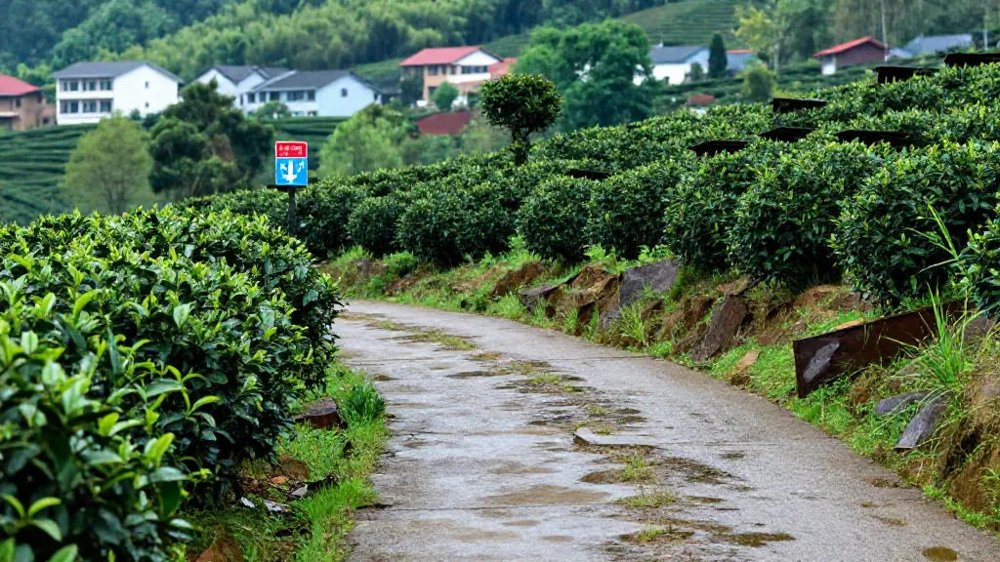

🏔️ 2026年8月13日，星期三，晴，凤凰山茶室。
📌 清晨茶山
今早去茶山，露水还挂在茶芽上，空气里有股清甜的草木香。回来的路上在镇口吃粿条，隔壁桌几个后生仔在聊什么"重返赛场""四十五岁"，声音不小，我耳朵尖，听了一耳朵，心里却泛起一阵暖意。
年纪这东西，哪有个定数啊。
📌 一泡老枞
回到店里，烧上一壶山泉水，取出一泡珍藏的老枞蜜兰香。这茶树在乌岽山那头长了五六十年，根扎得深，吸收的矿物质也多。头泡茶汤倒出来，颜色是淡淡的金黄，像初升的太阳；到了第三四泡，蜜韵就全出来了，入口醇和，回甘绵长，像是个有故事的老朋友，不紧不慢地跟你道来。
我端着盖碗，看茶叶在沸水里翻滚、舒展，一片一片沉下去又浮上来，忽然就想起刚才那些后生聊的话题。其实人和茶一样，年轻的时候是毛头小子，冲劲足但少了点回味；到了一定年纪，经历了风雨，沉淀了时光，反而更能品出真滋味。
📌 老陈练拳
下午老陈来了，六十出头，退休前是体育老师。他最近重新开始练拳了，每天早上五点起床，雷打不动。我说："您这身子骨，比小伙子还硬朗。"他端起茶杯，吹了吹浮沫："不是图个输赢，就是觉得，有些事放下了再拿起来，反而更懂得珍惜。就像你这老枞，越陈越香。"
我听了，笑而不语，给他续上一杯。
📌 新老茶客
茶桌上有个有意思的事——新茶客总爱问哪款茶最香，而老茶客往往只问一句："有没有老枞？"他们知道，香是表象，韵才是底子。那韵味从哪儿来？从时间，从土壤，从茶树经历过的一场场风霜雨雪里来。
📌 尾声
晚上收摊，我把那泡老枞的叶底摊在竹筛上晾干。深褐色的叶片，边缘有些卷曲，像一双双劳作过的手。我忽然觉得，这大概就是生活的样子：不必在意起点和终点之间隔了多久，重要的是，你还愿意重新站上去，还愿意为热爱的事再拼一回。
有些茶，越老越值钱。有些人，越活越有味道。
你要是路过惠州，来凤凰山坐坐。我煮水，你带故事，咱们喝一杯经得起时间的茶。